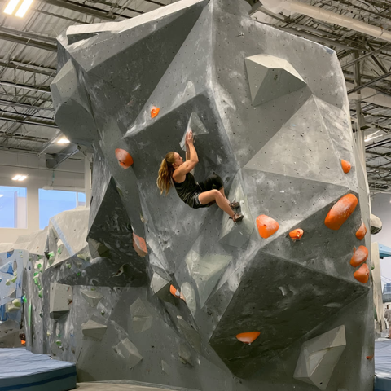
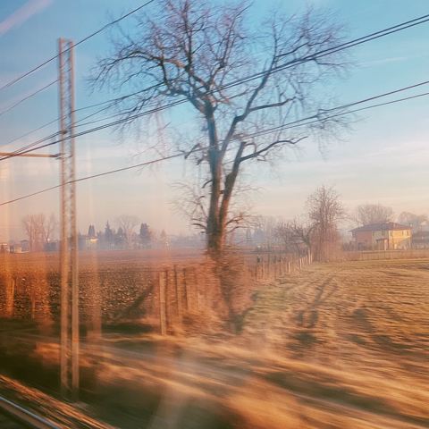

画面 1 — サークル選択シート
comp-uvpost-place
直した逸脱 ▸ 面: 不透明#0C0C10 →
--lg-tint-dark + --lg-blur ガラス
／ シェブロン: Material直書き →
DS(CSS border)
／ グレー: 場当たりhex →
--text-1/2/3
9:41
入っているサークル
3
現在地

渋谷コミュニティ
エリア内
半径200m · 128人 · 中心まで40m
新宿グループ
エリア内
半径150m · 86人 · 中心まで120m

原宿コミュニティ
エリア内
半径120m · 54人 · 中心まで90m
ストーリーを投稿